Observable outcome: each developer can locate a project Java class, identify its bundle and OSGi role, inspect the relevant runtime state and explain the Resource API boundary it consumes.
Topic summary
Java source does not become an AEM capability at compilation. The Maven core module packages classes and OSGi metadata into a managed bundle; Apache Felix resolves its package requirements; and Declarative Services creates eligible components only when mandatory references and configuration are satisfied. Bundle, component and service therefore describe different runtime objects and require different diagnostic evidence.
Once the runtime boundary is available, ordinary component code should begin with the highest useful abstraction. AEM product APIs model product concepts, while Sling’s Resource API exposes paths, resource types, typed properties and children without unnecessary JCR coupling. Lower-level JCR and OSGi APIs remain appropriate for repository-specific and container-specific requirements, but they should be intentional rather than habitual.
- Separate compilation, bundle resolution and component activation.
- Use manifest imports and exports as explicit runtime contracts.
- Distinguish bundle, managed component and published service.
- Use bundle and component states to identify the failing boundary.
- Prefer AEM and Sling abstractions for ordinary application work.
- Trace repository, source, bundle and runtime evidence together.
30-minute agenda
| Time | Slide | Facilitation |
|---|
| 0–3 | 1 · Opening | Preview the source-to-runtime-to-content trace. |
| 3–6 | 2 · Java boundaries | Separate compilation, packaging, resolution and activation evidence. |
| 6–9 | 3 · Bundle anatomy | Connect manifest headers to runtime package wiring. |
| 9–12 | 4 · Runtime vocabulary | Distinguish bundle, component and service. |
| 12–16 | 5 · Declarative Services | Follow one required reference through component activation. |
| 16–20 | 6 · Runtime evidence | Diagnose bundle and component states locally and in cloud environments. |
| 20–23 | 7 · Resource API | Inspect one Resource, its ValueMap, children and adaptation boundary. |
| 23–25 | 8 · API choice | Apply the AEM → Sling → JCR → OSGi preference ladder. |
| 25–27 | 9 · Integrated trace | Connect repository, source, bundle and component evidence. |
| 27–28 | 10 · Key takeaways | Summarize the five backend checkpoints. |
| 28–30 | 11 · Questions | Questions from the audience only; no review exercise. |
Complete slide deck
Study each slide with its presenter notes, then copy or download the PNG.
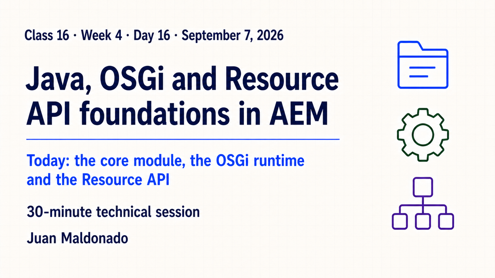
Detailed presenter notes
- Frame: Week 4 moves behind HTL and adds the runtime map for project Java.
- Preview: follow source in
core through bundle resolution, component activation and Resource access.
- Boundary: this session establishes foundations; Sling Models, configuration, servlets and tests follow later.
- Outcome: identify which evidence proves each handoff instead of treating “Java works” as one claim.
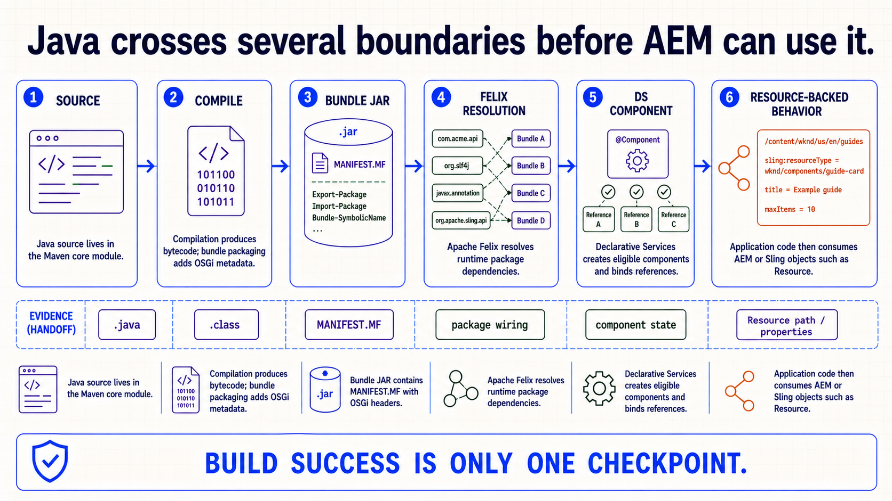
Detailed presenter notes
- Read left to right: source, compile, bundle JAR, Felix resolution, DS component and Resource-backed behavior.
- Evidence: map each stage to
.java, bytecode, manifest, package wiring, component state and content input.
- Avoid: build success proves compilation and packaging, not runtime resolution or activation.
- Transition: open the bundle artifact that carries Java into the managed runtime.
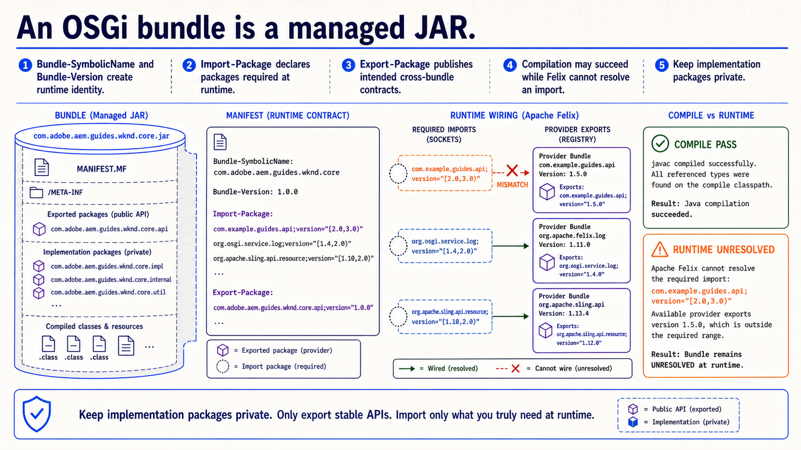
Detailed presenter notes
- Identity:
Bundle-SymbolicName and version give the module a stable runtime identity.
- Contracts: imports declare required packages; exports publish only supported cross-bundle packages.
- Failure: a dependency may exist on the build classpath but remain unavailable or incompatible in Felix.
- Design rule: keep implementation packages private unless another bundle needs a genuine contract.
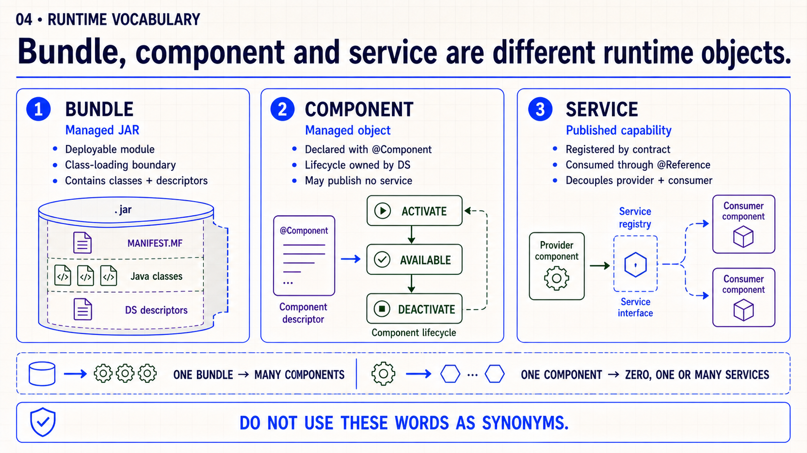
Detailed presenter notes
- Bundle: deployable module and class-loading boundary containing classes and descriptors.
- Component: managed object whose lifecycle belongs to Declarative Services.
- Service: capability a component may publish by contract for managed consumers.
- Relationship: one bundle may contain many components; a component may publish zero, one or several services.
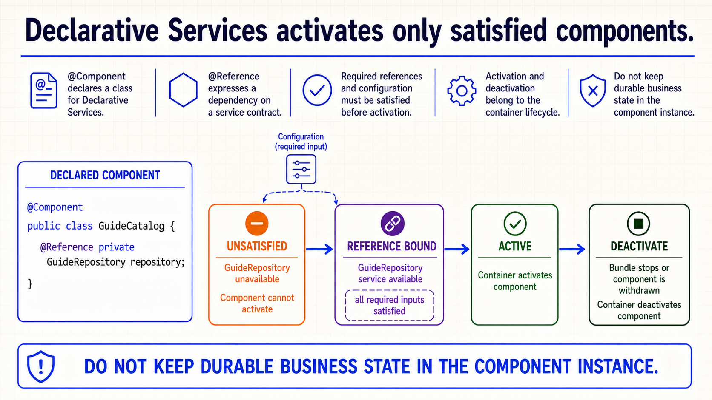
Detailed presenter notes
- Declare:
@Component makes the class eligible for DS management; @Reference declares a service dependency.
- Gate: the GuideCatalog remains unsatisfied until its required GuideRepository service is available.
- Ownership: the container binds references and owns activation and deactivation.
- Cloud rule: keep activation fast and do not treat component fields as durable business storage.
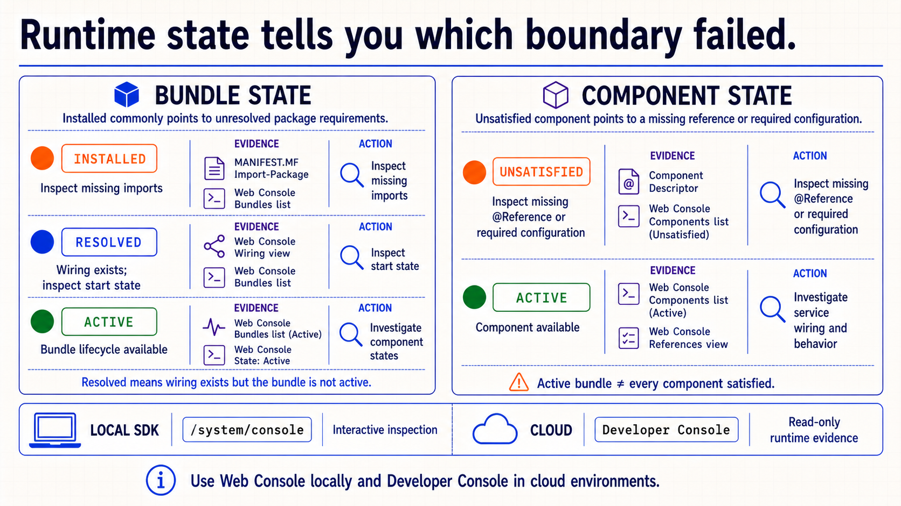
Detailed presenter notes
- Bundle rail: Installed suggests unresolved requirements; Resolved has wiring; Active confirms bundle lifecycle.
- Component rail: unsatisfied points to missing references or required configuration; active proves that managed object is available.
- Distinction: an Active bundle can still contain an unsatisfied component.
- Environment: inspect interactively in the local SDK Web Console and use read-only Developer Console evidence in cloud.
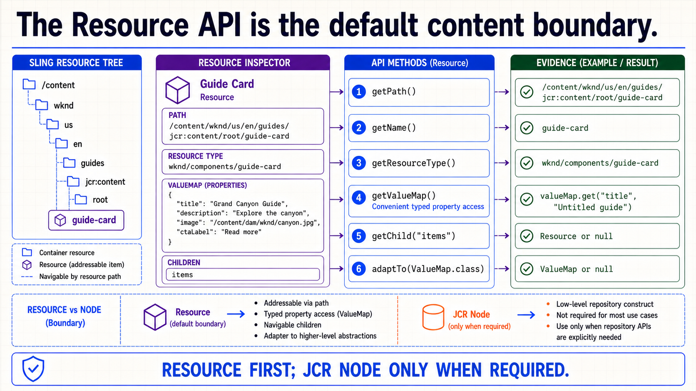
Detailed presenter notes
- Object: a Resource represents an addressable item in Sling’s resource tree.
- Properties: use
ValueMap for typed reads with explicit defaults.
- Structure: navigate known children through the Resource contract and adapt only to supported abstractions.
- Boundary: start resource-first; use direct JCR objects only for a JCR-specific requirement.
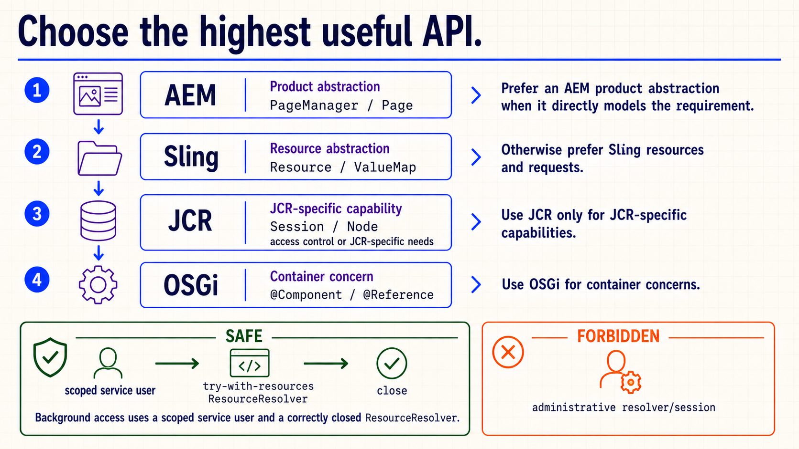
Detailed presenter notes
- Preference: select the highest API that directly expresses the requirement: AEM, Sling, JCR, then OSGi.
- Exceptions: use JCR for repository-specific work and OSGi for container-specific work.
- Security: administrative repository access is forbidden; background work uses a scoped service user.
- Ownership: close resolvers created by application code, preferably with try-with-resources.
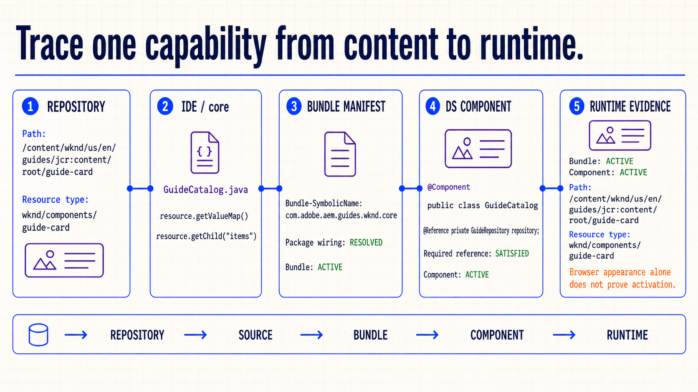
Detailed presenter notes
- Repository: record the Guide Card path and resource type.
- Source: locate the Java consumer in
core and identify exact Resource API reads.
- Runtime: connect bundle identity and package wiring to component descriptor, references and state.
- Explanation: use the full repository → source → bundle → component → runtime chain, not build success alone.
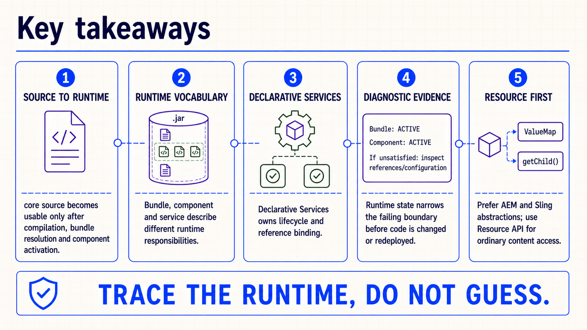
Detailed presenter notes
- Source: compilation, bundle resolution and component activation are separate checkpoints.
- Vocabulary: name bundle, component and service responsibilities precisely.
- Evidence: inspect bundle and component states before editing or redeploying.
- Content: prefer AEM and Sling abstractions and trace the runtime instead of guessing.
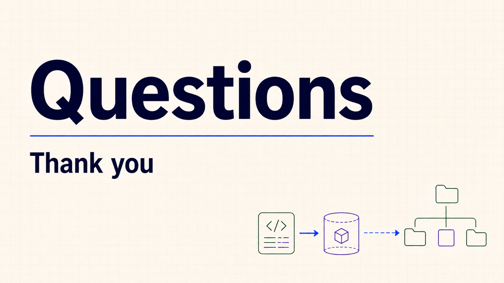
Detailed presenter notes
- Close: thank the audience and leave the floor open for questions they want to raise.
- Boundary: do not introduce prompts, an exercise, an assignment or another backend concept.
Runtime capability map
- Select one project Java class in the
core module.
- Locate the bundle symbolic name and inspect the class’s package imports or exports.
- Classify the Java type as a plain class, managed component and/or service provider.
- Locate the Resource boundary it consumes and record the exact properties or children read.
- Inspect the corresponding bundle, component and service evidence in the local SDK Web Console.
- Explain the result using repository, source, bundle and runtime evidence.
Acceptance: each map identifies the resource boundary, source class, bundle identity, component or service role and runtime state without confusing successful compilation with runtime activation.
Official reading
{kind=link}
{kind=link}
{kind=link}
{kind=link}
{kind=link}
{kind=link}
{kind=link}
{kind=link}
{kind=link}
{kind=link}
{kind=link}